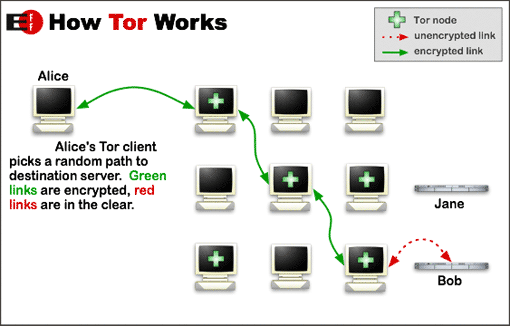

THE TOR NETWORK …As in wiki it’s a network which enables anonymity for your communication. It’s an acronym for the original project THE ONION ROUTER(TOR)..It consists of a large number of networks with itself ,through which a user connects to the internet ..it may sound crazy now. But what happens is when a client wants access to the internet through the TOR network it gets routed through large number of relays (some 6000)..So it becomes difficult to trace a request when it has come through the TOR network ..Thus hackers go completely anonymous because it becomes really difficult to trace a user’s location for anyone conducting network surveillance.

In between every two nodes within the TOR network the data gets encrypted ..thus at every application layer data gets simultaneously decrypted and encrypted . TOR encrypts the original data along with the destination ip and sends it through successive relays. In each relay a layer of encryption is removed and so at the final relay the innermost original information gets decrypted . It’s just like peeling off the layers of skin of an onion for the inner crust. So the final relay delivers the information to the destination without knowing the sender’s ip. Thus it works..
These network system are used by hackers to keep their anonymity or for illegal business deals. The U.S. NSA calls it ‘the king of high secure low latency internet anonymity ’.It has always been the target of the security agencies to penetrate the network and obtain technical information about the users. Like the Russian government on 2014 spend $111k to trace its users. And those who are for the TOR network speak about the immense power of RIGHT TO EXPRESSION provided by the network. Thus helping to maintaining the secrecy of Whistle Blowers..
Everyone must have heard about Edward Snowden ,the American computer professional and a former CIA employee who was charged for leaking classified NSA data in 2013.His leaked data showed that NSA was repeatedly trying to crack tor and reveal its users but didn’t succeed in breaking its core security. Julian Assange too used it in maintaining his anonymity. It’s also shown in the film FIFTH ESTATE where he routes the data through TOR network to maintain his anonymity.
There are various drawbacks of using it ..Your internet obviously slows down(even though you are using a fiber connection J ) because of so many relays in between . And also it doesn’t monitor traffic at both the end (while data enters to the first node and exits through the last node).So at the two ends lies stay secure. And to take care of your countries cyber security rules if you are running some kind of illegal sites ;)..
You can get all kind of info about the TOR network at its official website ..Many free services like the TOR browser or TOR OS are provided for free..
Hope this stuff was cool..
Official Link :www.torproject.org
{kind=link}